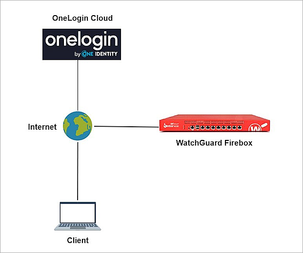
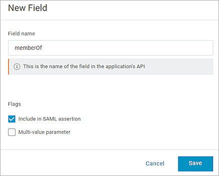
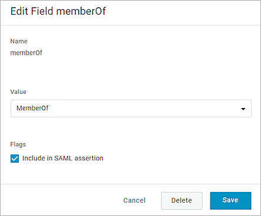
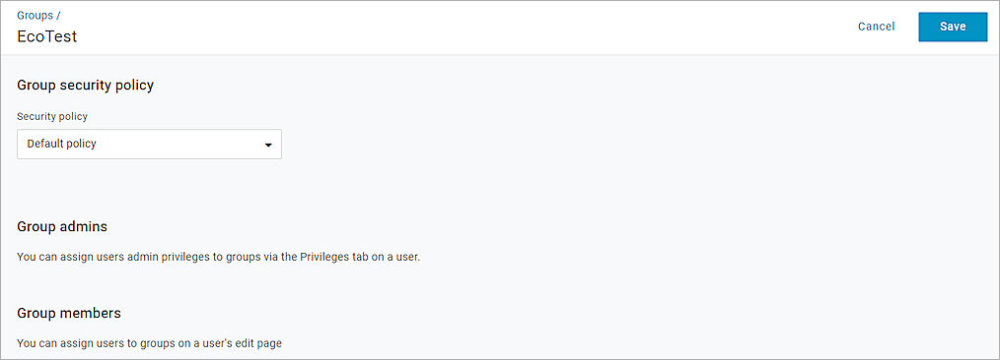
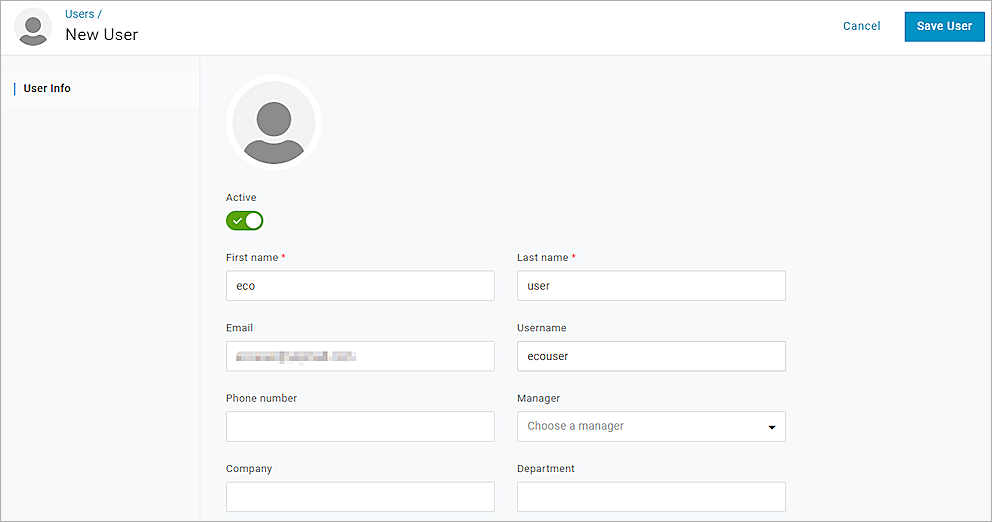
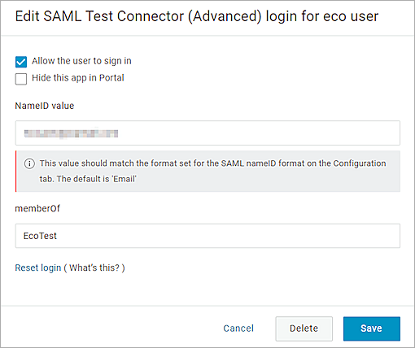
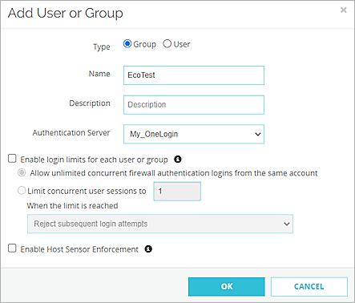
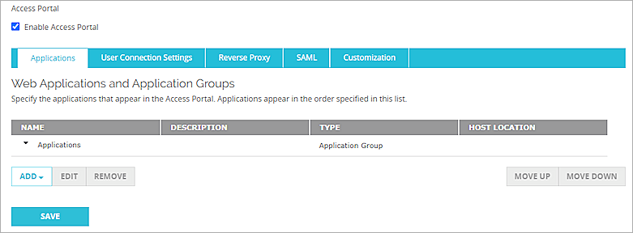
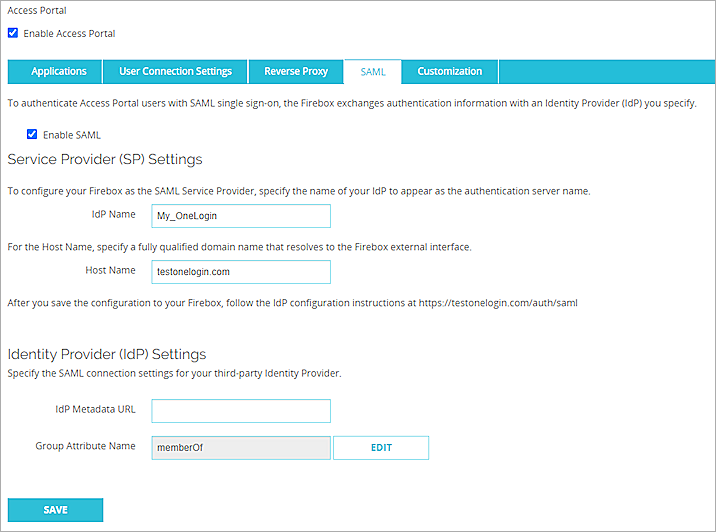

Deployment Overview
You can configure Single Sign-On to use SAML authentication and enable your users to log in through one portal and get access to multiple services.
This integration guide describes how to set up SAML authentication through the WatchGuard Access Portal with OneLogin as the Identity Provider.
This integration guide describes two configurations for Access Portal SAML authentication based on the different versions of Fireware. We recommend that you upgrade to Fireware v12.11 or higher.
Contents
Integration Summary
The hardware and software used in this guide include:
- OneLogin administrator account
- WatchGuard Firebox:
- Fireware v12.11 or higher
- Fireware v12.10 or lower
- Feature key with an Access Portal license
Test Topology
This integration uses OneLogin Portal to communicate with a WatchGuard Firebox over a public Internet connection.

Configure the Access Portal for SAML Authentication with OneLogin
The steps to configure the Access Portal for SAML authentication with OneLogin are different based on the version of Fireware that you have.
The WatchGuard Access Portal is a subscription service, before you can enable the Access Portal feature and configure it on your Firebox, you must add an Access Portal license to your Firebox feature key.
Complete the steps in this section to configure the Access Portal for SAML authentication with OneLogin with Fireware v12.11 or higher.
Enable the Firebox SAML Authentication Server
To enable the Firebox SAML authentication server:
- Log in to Fireware Web UI (https://your Firebox IP address:8080).
- From the left navigation, select Authentication > Servers.
- Select the SAML tab.
The SAML page opens. - Select the Enable SAML check box.
- In the Service Provider (SP) Settings section, enter this information:
You add the IdP settings later in this process.- IdP Name — Enter a name to identify the SAML authentication server in other Firebox settings. In this example, we use My_OneLogin.
- Host Name — Enter the fully qualified domain name that resolves to the Firebox external interface.
- Leave the IdP Metadata URL text box blank for now, and leave memberOf as the default Group Attribute Name. We will configure the identity provider settings later.
- Click Save.


Enable and Configure the Firebox Access Portal
To configure the Access Portal on your Firebox:
- From the navigation, select Subscription Services > Access Portal.
The Access Portal page appears with the Applications tab selected by default. - Select the Enable Access Portal check box.
- Select the User Connection Settings tab.
- In the Authentication Servers section, from the Authentication Servers drop-down list, select the SAML authentication server you created. For our example, we select My_OneLogin.
- Click Add.
- Click Save.
- Copy the SP Metadata URL, then click Done.
- Open a web browser and go to the SP Metadata URL (https://Host name or Firebox IP address/auth/saml). If you configure an Access Portal port other than 443, you must navigate to https://Firebox interface IP address:custom port number/auth/saml.
The configuration instructions page appears.Several Firebox features use SSL/TLS for secure communication. For more information, see Shared Settings and Policy.
- Make sure you have this SP information from Option 2. You need this information when you configure OneLogin.
- SAML Entity ID — https://host name/auth/saml
- Assertion Consumer Service (ACS) URL — https://host name/auth/saml/acs
- Single Logout Service (SLS) URL — https://host name/auth/saml/sls
- X.509 Certificate


Configure OneLogin
To configure OneLogin:
- Log in to your OneLogin Administration panel.
- From the top navigation bar, select Applications > Applications, then click Add App.
- In the search text box, type SAML Test Connector.
A list of connector options appears. - Select SAML Custom Connector (Advanced).
- On the Portal page, in the Display Name text box, type a descriptive name. For our example, we type WatchGuard Firebox Access Portal (SAML).
- (Optional) To enable your users to see the configuration in the OneLogin portal, select Visible in portal.
- (Optional) Select an icon option and upload the icon.
- Click Save.
Your SAML application page opens. - From the left navigation, select Configuration.
- Specify these settings:
- From the SAML signature element drop-down list, select Assertion.
- Select the Encryption assertion check box.
- From the SAML encryption method drop-down list, select AES-256-CBC.
- Leave the default value for all other settings.
- Click Save.
- From the left navigation, select the Configuration tab.
- Scroll to the bottom and from the SAML Encryption section, for the Public key, paste the certificate you copied from the previous section.
- From the left navigation, select Parameters.
- In the Credentials are section, select Configured by admin.
- Verify that the NameID value setting is Email.
- Click
 to add a new field for group authentication. If you only want to use user authentication, skip Steps 21–26.
to add a new field for group authentication. If you only want to use user authentication, skip Steps 21–26. - In the Field name text box, type memberOf.
- Select the Include in SAML assertion check box.
- Click Save.
- From the Value drop-down list, select MemberOf.
- Click Save.
- From the left navigation, select SSO.
- From the SAML Signature Algorithm drop-down list, select SHA-256.
- Copy the value of the Issuer URL. You need this value when you configure the Access Portal. This value is the IdP Metadata URL in the Access Portal.
- To enable assumed sign-in, select the Allow assumed users to sign into this app check box.
- Leave the default value for all other settings.
- Click Save.
- If you do not have any groups or users, complete Steps 34-40 to create a test group and test user. If you already have users and groups, go to Step 41.
- From the top navigation bar, select Users > Groups, then click New Group.
- In the Untitled Group text box, type a descriptive name for the group.
- From the Security policy drop-down list, select Default policy.
- Click Save.
- From the top navigation bar, select Users > Users, then click New User.
- Fill in the required information and email address.
- Click Save User.
- From the top navigation bar, select Users > Users and select a user for configuration.
- (Optional) If this is a new user, from the More Action drop-down list, select Change Password to change the user's password first.
- Select the Authentication tab, and from the Group drop-down list, select the group you want to assign to the user.
- Select the Applications tab, then click to assign applications to the user.
- From the Select application drop-down list, select the SAML application you created.
- Click Continue.
- Select the Allow the user to sign in check box.
- Verify the value of NameID value is the email address of the user.
- In the memberOf text box, type the group name you created.
- Click Save.
- Click Save User.


RelayState
Leave this value blank.
Audience (EntityID)
https://your host name/auth/saml
This is the SAML Entity ID value from the Access Portal configuration page.
Recipient
https://your host name/auth/saml/acs
This is the Assertion Consumer Service (ACS) URL value from the Access Portal configuration page.
ACS (Consumer) URL Validator
https://your host name/auth/saml/acs
This is the Assertion Consumer Service (ACS) URL value from the Access Portal configuration page.
ACS (Consumer) URL:
https://your host name/auth/saml/acs
This is the Assertion Consumer Service (ACS) URL value from the Access Portal configuration page.
Single Logout URL
https://your host name/auth/saml/sls
This is the Single Logout Service (SLS) URL value from the Access Portal configuration page.










Complete SAML Authentication Server Setup
- Log in to Fireware Web UI.
- From the left navigation, select Authentication > Servers.
- Select SAML.
- In the IdP Metadata URL text box, paste the value of the Issuer URL you copied from the OneLogin setup.
- Click Save.

Complete the Firebox Access Portal Setup
- Log in to Fireware Web UI.
- From the navigation, select Subscription Services > Access Portal.
The Access Portal page appears with the Applications tab selected by default. - If you do not have any applications in the Access Portal, complete Steps 4-8 to add a web application to the Access Portal. To learn how to add other applications to Access Portal, go to Configure the Access Portal.
- From the Applications section, click Add. In this example, we use Web Application.
The selected application page opens. - In the Name text box, type a description name.
- In the URL text box, type a URL address.
- Click OK.
- Click Save.
- For the rest part of this section, we show the steps to configure group or user authentication. If you allow all applications to be available to all users and groups authenticated with the Access Portal, skip to the Test the Integration section.
- From the left navigation, select Authentication > Users and Groups.
- Click Add. You can add a user for user authentication or a group for group authentication. In our example, we add a group for group authentication. If you want to add a user, the user name must be the same as the user's email address in OneLogin.
The Add User or Group page appears. - For Type, select Group.
- In the Name text box, type a name for the group. The group name must be the same as the group name of memberOf in OneLogin.
- From the Authentication Server drop-down list, select the authentication server where the user or group exists.
- Click OK.
- Click Save.
- From the left navigation, select Subscription Services > Access Portal, then select the User Connection Settings tab.
- In the User Access section, select Specify the applications available to each user and group, then click Add below.
The Add User or Group page opens. - From the Authentication Server drop-down list, select the authentication server.
- From the Type drop-down list, select Group.
- In the Name text box, type the group name. The group name must be the same as the group name of memberOf in OneLogin.
- Select the applications that are available to this group.
- Click OK.
- Click Save.




Complete the steps in this section to configure the Access Portal for SAML authentication with OneLogin with Fireware v12.10 and lower.
Enable the Firebox Access Portal
To enable the Access Portal on your Firebox:
- Log in to Fireware Web UI (https://your Firebox IP address:8080).
- From the navigation, select Subscription Services > Access Portal.
The Access Portal page appears with the Applications tab selected by default. - Select the Enable Access Portal check box.
- Select the SAML tab.
- Select the Enable SAML check box.
- In the Service Provider (SP) Settings section, enter this information:
You add the IdP settings later in this process.- IdP Name — Enter a name for the SAML authentication to appear in other Firebox settings as the server name. In this example, we use My_OneLogin.
- Host Name — Enter the fully qualified domain name that resolves to the Firebox external interface.
- Click Save.
- Go to https://<host name>/auth/saml.
- Make sure you have this SP information from Option 2, you need this information when you configure OneLogin


Configure OneLogin
- Log in to your OneLogin Administration panel.
- From the top navigation bar, select Applications > Applications, then click Add App.
- In the search text box, type SAML Custom Connector.
A list of connector options appears. - Select SAML Custom Connector (Advanced).
- On the Portal page, in the Display Name text box, type a descriptive name. For our example, we type WatchGuard Firebox Access Portal (SAML).
- (Optional) To enable your users to see the configuration in the OneLogin portal, select Visible in portal.
- (Optional) Select an icon option and upload the icon.
- Click Save.
Your SAML application page opens. - From the navigation, select Configuration .
- Specify these settings:
- From the SAML signature element drop-down list, select Assertion.
- Select the Encryption assertion check box.
- From the SAML encryption method drop-down list, select AES-256-CBC.
- Keep the default values for all other settings.
- Click Save.
- From the left navigation, select the Configuration tab again.
- Scroll to the bottom, from the SAML Encryption section, for the Public key, paste the certificate you copied from the previous section.
- From the navigation, select Parameters.
- In the Credentials are section, select Configured by admin.
- Verify that the NameID value setting is Email.
- Click to add a new field for group authentication. If you only want to use user authentication, skip steps 21–26.
- In the Field name text box, type memberOf.
- Select the Include in SAML assertion check box.
- Click Save.
- From the Value drop-down list, select MemberOf.
- Click Save.
- From the left navigation, select SSO.
- From the SAML Signature Algorithm drop-down list, select SHA-256.
- Copy the value of the Issuer URL. You need this URL to configure the Firebox Access Portal SAML IdP Metadata URL.
- To enable assumed sign-in, select the Allow assumed users to sign into this app check box.
- Keep the default values for all other settings.
- Click Save.
- If you do not have any groups or users, follow steps 35-41 to create a test group and a test user. If you already have users and groups, go to Step 42.
- From the top navigation bar, select Users > Groups, then click New Group.
- In the Untitled Group text box, type a descriptive name for the group.
- From the Security policy drop-down list, select Default policy.
- Click Save.
- From the top navigation bar, select Users > Users, then click New User.
- Fill in the Email address and other required information.
- Click Save User.
- From the top navigation bar, select Users > Users and select a user for configuration.
- (Optional) If this is a new user, from the More Action drop-down list, select Change Password to change the user's password first.
- Select the Authentication tab, from the Group drop-down list, select the group you want to assign for.
- Select the Applications tab, then click to assign an application to the user.
- From the Select application drop-down list, select the SAML application you created.
- Click Continue.
- Select the Allow the user to sign in check box.
- Verify the value of NameID value is the email address of the user.
- In the memberOf text box, type the name of the group to which this user belongs.
- Click Save.
- Click Save User.
RelayState
Leave this value blank.
Audience (EntityID)
https://your host name/auth/saml
This is the SAML Entity ID value from the Access Portal configuration page.
Recipient
https://your host name/auth/saml/acs
This is the Assertion Consumer Service (ACS) URL value from the Access Portal configuration page.
ACS (Consumer) URL Validator
https://your host name/auth/saml/acs
This is the Assertion Consumer Service (ACS) URL value from the Access Portal configuration page.
ACS (Consumer) URL:
https://your host name/auth/saml/acs
This is the Assertion Consumer Service (ACS) URL value from the Access Portal configuration page.
Single Logout URL
https://your host name/auth/saml/sls
This is the Single Logout Service (SLS) URL value from the Access Portal configuration page.
Complete the Firebox Access Portal Setup
To complete the Firebox Access Portal setup:
- Log in to Fireware Web UI, and from the navigation, select Subscription Services > Access Portal.
- Select the SAML tab.
- In the IdP Metadata URL text box, paste the value of the Issuer URL you copied from the OneLogin setup.
- Click Save.
- If you do not have any applications in the Access Portal, follow Steps 6-10 to add a web application to the Access Portal. To learn how to add other applications to the Access Portal, see Configure the Access Portal.
- From the Applications section, click Add. In this example, we use Web Application.
The selected application page opens. - Click the Applications tab, then click Add. In our example, we select the Web Application.
- In the Name text box, type a description name.
- In the URL text box, type a URL address.
- Click OK.
- Click Save.
- For the rest part of this section, we show the steps to configure group or user authentication. If you allow all applications to be available to all users and groups authenticated with the Access Portal, skip to the test section.
- From the left navigation, select Authentication > Users and Groups.
- Click Add. You can add a user for user authentication or a group for group authentication. In our example, we add a group for group authentication. If you want to add a user, the user name must be the same as the user's email address in OneLogin.
The Add User or Group page appears. - For Type, select Group.
- In the Name text box, type a name for the group. The group name must be the same as the group name of memberOf in OneLogin.
- From the Authentication Server drop-down list, select the authentication server where the user or group exists.
- Click OK.
- Click Save.
- From the left navigation, select Subscription Services > Access Portal, then select the User Connection Settings tab.
- In the User Access section, select Specify the applications available to each user and group, then click Add below.
The Add User or Group page opens. - From the Authentication Server drop-down list, select the authentication server.
- From the Type drop-down list, select Group.
- In the Name text box, type the group name. The group name must be the same as the group name of memberOf in OneLogin.
- Select the applications that are available to this group.
- Click OK.
- Click Save.


Test the Integration
After you have completed these configuration steps, users in the group you added can sign in to either the OneLogin account or to a resource configured with OneLogin Single Sign-On.
- Type the URL for the Access Portal in this format: https://Firebox host name.
The Log In page appears with the name of the SAML portal you configured at the top of the page. - To log in, click the name of the SAML portal. In this example, we click My_OneLogin.
- Complete the authentication process in OneLogin.
After successful authentication, the user can get access to the resource.